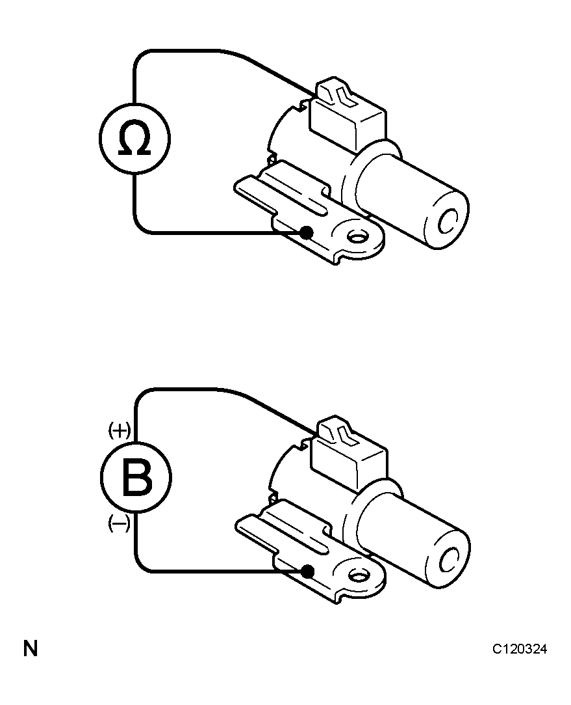

Inspection Procedure
WARNING: This page is about a different variant/trim than selected.
- INSPECT SHIFT SOLENOID VALVE SL
- Remove the shift solenoid valve SL.
- Measure the resistance of the solenoid valve.
Standard resistance: 11 to 15 Ωat 20°C (68°F)
- Connect the battery's positive (+) lead to the terminal of the solenoid connector, and the negative (-) lead to the solenoid body.
- Check the operating noise of the solenoid valve.
OK: Solenoid makes operating noise.
NG: REPLACE SHIFT SOLENOID VALVE SL

Courtesy of © TOYOTA, LICENSE AGREEMENT TMS1002OK: Go to Next Step
- INSPECT TRANSMISSION VALVE BODY ASSEMBLY
- Check the transmission valve body assembly.
OK: There are no foreign objects on each valve.
NG: REPAIR OR REPLACE TRANSMISSION VALVE BODY ASSEMBLY
OK: Go to Next Step
- Check the transmission valve body assembly.
- INSPECT TORQUE CONVERTER CLUTCH ASSEMBLY
- Check the torque converter clutch assembly (see TORQUE CONVERTER CLUTCH AND DRIVE PLATE
).
OK: The torque converter clutch operates normally.
NG: REPLACE TORQUE CONVERTER CLUTCH ASSEMBLY
OK: REPAIR AUTOMATIC TRANSAXLE ASSEMBLY
- Check the torque converter clutch assembly (see TORQUE CONVERTER CLUTCH AND DRIVE PLATE
).